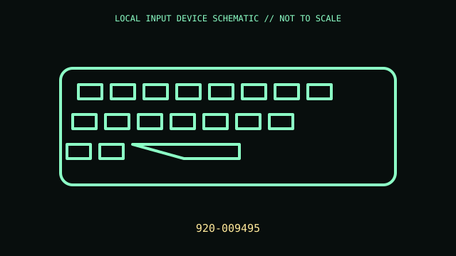

[ KEYBOARDS AND INTEGRATED POINTING DEVICES // IDENTIFIED COMPONENT ]
Logitech G915 TKL LIGHTSPEED Wireless RGB Keyboard
Tenkeyless low-profile mechanical keyboard with LIGHTSPEED wireless and per-key lighting.

MODEL IDENTIFICATION: 920-009495. Confirm complete SKU, package, region, and revision before compatibility claims.
Model specifications
| Catalog leaf | Keyboards and integrated pointing devices |
|---|---|
| Exact model / identifier | 920-009495 |
| Physical mechanism and primary specifications | Low-profile GL mechanical switches (switch feel varies by SKU); LIGHTSPEED 2.4 GHz, Bluetooth and wired USB; per-key LIGHTSYNC RGB; dedicated media controls; rechargeable battery. |
| Compatibility and interface caveats | Check switch/layout PID and USB cable generation; LIGHTSYNC and macros require G HUB. USB mode and wireless modes may expose different configuration options. |
| Revision identification | Record full product label, software/firmware version, and supplied accessories. Product-family versions may differ in connector, protocol, features, or host requirements. |
Preservation and service
Disconnect before cleaning; keep receiver, cable, keycaps and feet with the keyboard; avoid liquid ingress around low-profile switches.
Record condition and test setup separately from vendor specifications, including host OS and software.
Primary manufacturer sources
- Logitech G915 TKL productManufacturer documentation; confirm exact PID, regional suffix, and hardware revision on the unit.
- Logitech G915 TKL supportManufacturer documentation; confirm exact PID, regional suffix, and hardware revision on the unit.
Retain relevant manual revisions with the equipment record; vendor support pages can change.